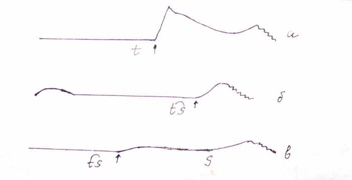

–ис. 58. «апись с помощью мареевского барабанчика выхода воздуха изо рта: а Ц сочетание [t + s(a)], стрелкой отмечен взрыв [t]; б Ц аффриката [ts], стрелкой отмечено начало перехода смычки в щель; в Ц сочетание [ts + s], стрелкой отмечено начало щелевой части аффрикаты (по [ўерба 1909])
